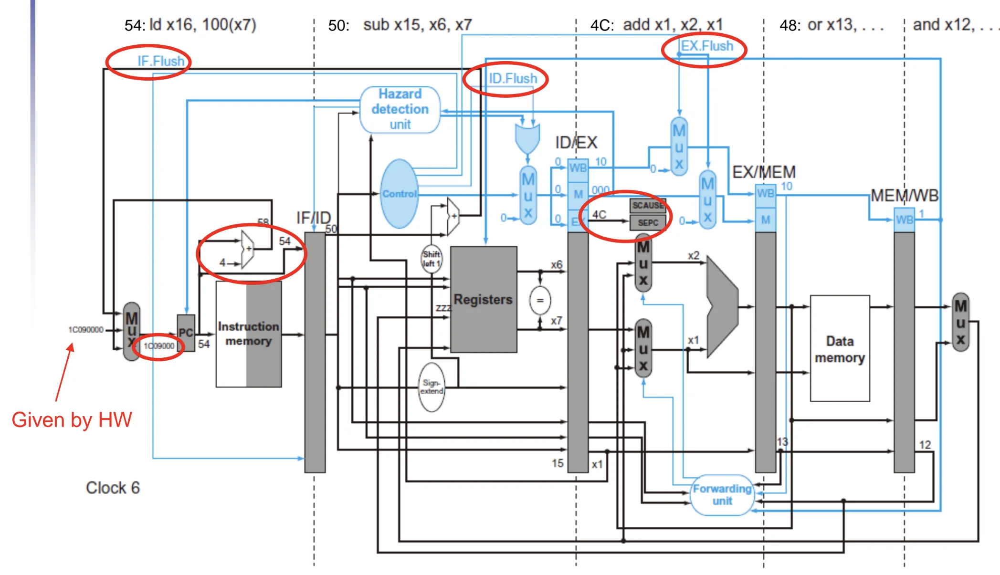
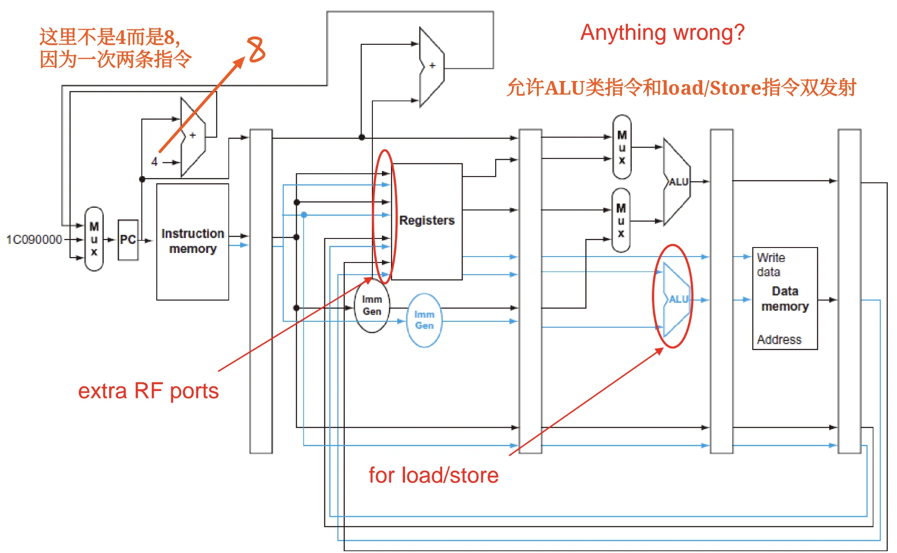
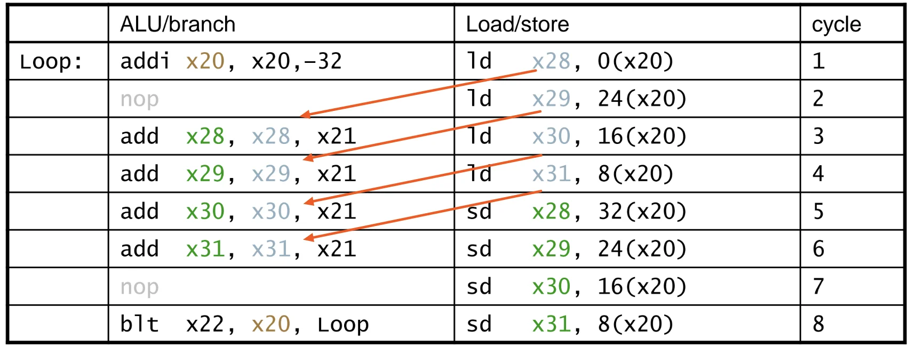
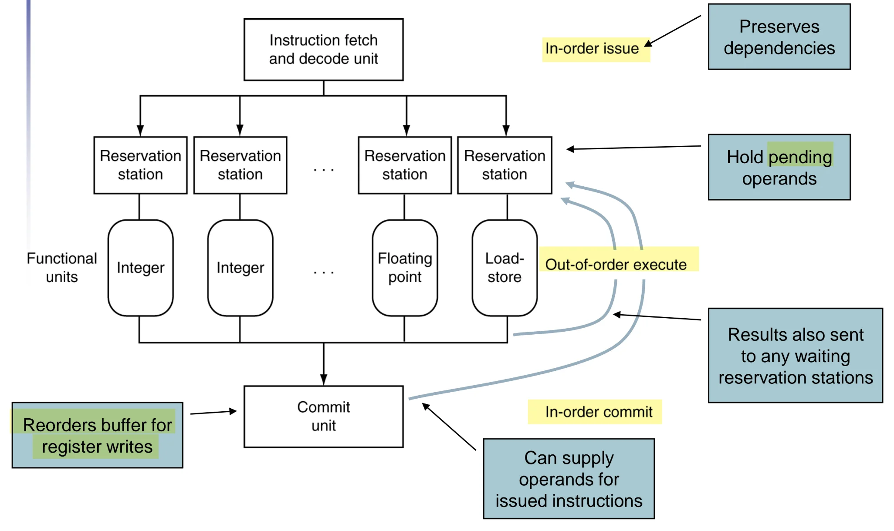

第四章：处理器架构与流水线设计 (Part 2)¶
VII. Exceptions and Interrupts¶
"Unexpected" events requiring change in flow of control. Different ISAs use the terms differently.
最典型的有两种：
- Exception/Trap: 发生在 CPU 内部的事件，如除零错误、MEM 比特翻转等。
- Interrupt: 发生在外部设备，例如键盘输入、网络数据到达等。
7.1 ISA 与异常 (ISA and Exception)¶
不同的高级语言对异常（如算术溢出）的处理方式不同：
(1) 忽略溢出的语言（如 C 语言）：RISC-V 默认的 add, addi, sub 等指令不会因为溢出而产生异常。
(2) 抛出异常的语言（如 Ada, Fortran）：如果需要检测溢出，RISC-V 并不提供专用的带溢出检测的加法指令，而是通过额外的分支指令（Branch）由软件来实现检测。
1. 无符号数加法：addu t0, t1, t2 后，接 bltu t0, t1, overflow (若和小于任一加数，说明进位溢出)。
2. 有符号数加法：判断逻辑更复杂，需要判断符号位是否发生异常翻转（如正+正=负，负+负=正）。例如：
add t0, t1, t2
slti t3, t2, 0 # t3 = (t2<0)
slt t4, t0, t1 # t4 = (t1+t2<t1)
bne t3, t4, overflow # 如果 t2<0 且 t1+t2>=t1，或 t2>=0 且 t1+t2<t1，则发生溢出
7.2 异常/中断的处理机制 (Handling Exceptions)¶
为了让操作系统（OS）能够接管并处理异常，硬件必须自动完成以下操作：
(1) 保存现场：
- 记录发生异常/被中断的指令的 PC 值。在 RISC-V 中，保存在 SEPC (Supervisor Exception Program Counter) 寄存器中。
SEPC是专用寄存器，软件无法控制。 - 记录异常发生的原因。在 RISC-V 中，保存在 SCAUSE (Supervisor Exception Cause) 寄存器中。
(2) 跳转到处理程序 (Handler)：
- 向量中断 (Vectored Interrupts)：根据不同的异常原因，直接跳转到对应的地址（例如：未定义操作码跳转到
C000 0000，溢出跳转到C000 0020）。 - 单一入口点 (Single entry point)：所有异常跳到同一个基地址（如
1C090000），然后由软件读取 SCAUSE 寄存器，再利用switch-case跳转到具体的处理函数。
处理程序 (Handler) 的执行动作
(1) 读取 SCAUSE 确定原因并执行相应动作。
(2) 如果是可恢复的 (Restartable)：处理完毕后，利用 SEPC 寄存器的值返回原程序，重新取指（Refetch）并从头执行该指令。
(3) 如果是不可恢复的 (Otherwise)：终止程序，并利用 SEPC 和 SCAUSE 报告错误（如常见的段错误 Segfault）。
7.3 流水线中的异常处理硬件实现 (Exception in Pipeline)¶
假设在 EX 阶段的 add 指令发生了异常：
- 硬件冲刷 (Flush)：硬件会发出
IF.Flush,ID.Flush,EX.Flush信号，将该指令以及正在 IF、ID 阶段跟随它的后续指令全部清空，替换为气泡（Bubble / nop）。同时将异常指令的 PC 值保存到 SEPC 寄存器中，将异常原因保存到 SCAUSE 寄存器中。 - 重定向 PC：硬件强制将 PC 的多路选择器（MUX）切换，把下一条指令的取指地址指向 Exception Handler 的入口地址（如
1C090000）。 - 之前已经进入 MEM 和 WB 阶段的指令（处于故障指令之前的指令）允许正常执行完毕，保证机器状态的精确性（Precise Exception）。

VIII. 指令级并行 (Instruction-Level Parallelism, ILP)¶
为了进一步提升 CPU 性能（降低 CPI），必须挖掘指令级并行。
- 时间并行 (Temporal Parallelism)：加深流水线（Deeper pipeline）。每级流水线的工作量变少，时钟频率（Clock rate）可以更高。但代价是：控制冒险和异常带来的冲刷惩罚（Penalty）变得更大。
- 空间并行 (Spatial Parallelism)：增加多个功能单元（Multiple function units），例如设计多个 ALU。
8.1 多发射技术 (Multiple Issue)¶
结合空间与时间并行，允许在同一个时钟周期内启动多条指令。此时 CPI < 1，因此通常使用 IPC (Instructions Per Cycle) 来衡量性能。多发射面临严重的数据依赖挑战，主要分为两派：
- 静态多发射 (Static multiple issue)：依赖编译器 (Compiler)。编译器负责检测冒险，并将没有依赖关系的指令打包在一起（Issue packet）。这种架构常被称为 VLIW (Very Long Instruction Word，超长指令字)。
- 动态多发射 (Dynamic multiple issue)：依赖 CPU 硬件 (HW)。CPU 在运行时动态检查指令流，决定每个周期发射哪些指令。硬件利用乱序执行（Out-of-Order）、重命名等高级技术在运行时解决冒险（超标量 Superscalar 架构通常用此方法）。
8.2 RISC-V 静态双发射架构设计 (RISC-V Static Dual Issue)¶
8.2.1 Architecture¶
以一种简单的 VLIW 思想实现的 RISC-V 双发射为例，该双发射为一条 ALU/Branch 指令和一条Load/Store 指令的组合。流水线架构图：

- 发射包 (Issue Packet)：64-bit 对齐（包含 2 条 32-bit 指令）。
- 组合限制：为了简化译码器和发射逻辑，严格规定一条是
ALU/Branch指令，另一条是Load/Store指令。如果某类指令缺失，必须用nop(气泡) 填充。
硬件架构的修改：
为了支持双发射，数据通路（Datapath）需要付出额外的硬件成本：
1. 寄存器堆 (Register File, RF) 端口增加：两条指令同时读取和写入，RF 需要增加到额外的读端口和写端口（例如需要 4个读端口，2个写端口）。
2. 增加额外的 ALU：原本五级流水线中唯一的 ALU 不能同时处理数据运算和内存地址计算，必须为 Load/Store 流水线单独增加一个用于地址计算的 ALU/Adder。
8.2.2 Hazards in the Dual-Issue RISC-V¶
双发射架构中，更多的指令并行执行，此时冒险的情况更复杂，主要有以下几类：
(1) EX data hazard
单发射中通过 fwd 结构可以解决如下 stall 的问题：
这种情况必须切分为两个指令包，因此会产生 stall /
(2) Load-use hazard
Still one cycle use latency, but now two instructions are affected.
(3) More aggressive scheduling required
8.2.3 Scheduling Example¶
以如下RISC-V循环代码为例，展示静态双发射的指令调度优化：
Loop:
ld x31, 0(x20) # x31=array element
add x31, x31, x21 # add scalar in x21
sd x31, 0(x20) # store result
addi x20, x20, –8 # decrement pointer
blt x22, x20, Loop # branch if x22<x20
基础双发射调度结果
严格遵循「1条ALU/branch + 1条Load/Store」的发射包规则，调度后每个周期的指令包如下：
| ALU/branch | Load/store | cycle | |
|---|---|---|---|
| Loop: | nop | ld x31 , 0(x20) | 1 |
| addi x20 , x20, –8 | nop | 2 | |
| add x31 , x31 , x21 | nop | 3 | |
| blt x22, x20 , Loop | sd x31 , 8(x20) | 4 |
8.3 循环展开 (Loop Unrolling) 优化¶
循环展开是挖掘ILP的核心编译器优化手段，核心思想是复制循环体，减少循环控制指令的开销，暴露更多可并行的指令，配合多发射技术进一步提升IPC。
8.3.1 单发射架构下的循环展开¶
以上述循环代码为例，4次循环展开后的基础代码如下：
Loop:
ld x28, 0(x20)
add x28, x28, x21
sd x28, 0(x20)
ld x29, -8(x20)
add x29, x29, x21
sd x29, -8(x20)
ld x30, -16(x20)
add x30, x30, x21
sd x30, -16(x20)
ld x31, -24(x20)
add x31, x31, x21
sd x31, -24(x20)
addi x20, x20, -32
blt x22, x20, Loop
- 优化收益：原本1次循环需要1条
addi+1条blt，4次循环展开后，循环控制指令的开销降低为原来的1/4。- 代价：需要占用更多的通用寄存器（x28~x31），同时代码体积增大。
8.3.2 循环展开+流水线调度¶
在循环展开的基础上，编译器可通过指令重排，规避Load-use等数据冒险，进一步消除流水线气泡。优化后的指令序列如下：
Loop:
ld x28, 0(x20)
ld x29, -8(x20)
ld x30, -16(x20)
ld x31, -24(x20)
add x28, x28, x21
add x29, x29, x21
add x30, x30, x21
add x31, x31, x21
sd x28, 0(x20)
sd x29, -8(x20)
addi x20, x20, -32
sd x30, 16(x20)
sd x31, 8(x20)
blt x22, x20, Loop
核心优化逻辑：将所有Load指令提前，利用Load的延迟间隙完成其他指令的执行，彻底消除Load-use冒险带来的流水线停顿。
8.3.3 多发射+循环展开的联合优化¶
将静态双发射与4次循环展开结合，最终调度结果如下：
| ALU/branch | Load/store | cycle | |
|---|---|---|---|
| Loop: | addi x20 , x20,–32 | ld x28 , 0(x20) | 1 |
| nop | ld x29 , 24(x20) | 2 | |
| add x28 , x28 , x21 | ld x30 , 16(x20) | 3 | |
| add x29 , x29 , x21 | ld x31 , 8(x20) | 4 | |
| add x30 , x30 , x21 | sd x28 , 32(x20) | 5 | |
| add x31 , x31 , x21 | sd x29 , 24(x20) | 6 | |
| nop | sd x30 , 16(x20) | 7 | |
| blt x22, x20 , Loop | sd x31 , 8(x20) | 8 |
- 性能收益：8个周期完成14条有效指令，IPC = 14/8 = 1.75，接近双发射架构的理论峰值IPC=2。
- 代价：进一步增加了寄存器占用和代码体积，属于典型的「以空间换性能」的编译器优化。

8.4 动态多发射 (Dynamic Multiple Issue)¶
8.4.1 超标量处理器基础¶
动态多发射架构也被称为超标量（Superscalar）处理器，核心特征是：
- 由CPU硬件在运行时动态决定每个周期发射0、1、2条甚至更多指令，自动规避结构冒险和数据冒险。
- 无需编译器提前做指令打包和调度，编译器的指令重排仅起辅助优化作用。
- 由硬件保证代码语义的正确性，支持按序发射（In-order issue） 或乱序发射。
8.4.2 动态流水线调度与乱序执行 (Out-of-Order, OOO)¶
动态调度的核心能力是允许CPU乱序执行指令，以规避流水线停顿，但最终按序提交结果到寄存器，保证程序执行的语义正确性。
示例：如下指令序列中，add指令依赖ld的结果，会产生Load-use停顿，但sub和andi指令与前后指令无依赖，可在ld的延迟间隙提前执行：
ld x31, 0(x21) -> ld x31, 0(x21)
add x1, x31, x2 -> sub x23, x23, x3
sub x23, x23, x3 -> add x1, x31, x2
andi x5, x23, 20 -> andi x5, x23, 20
执行逻辑：CPU可在等待
ld从内存读取数据的同时，先完成sub指令的执行，充分利用流水线资源，消除无效停顿。
8.4.3 动态调度CPU的核心结构¶
动态调度CPU的核心流水线结构分为三大阶段，严格遵循「按序取指发射、乱序执行、按序提交」的核心原则：

-
按序取指与译码阶段
指令取指单元按程序顺序取指，完成译码后，将指令发送到对应的保留站（Reservation Station），保证指令发射的顺序性。 -
乱序执行阶段
- 保留站：缓存待执行指令的操作数，等待操作数准备就绪后，立即将指令发送到对应的功能单元执行，无需等待前序无关指令完成。
- 功能单元：包含多个并行的整数ALU、浮点单元、Load-Store单元，支持指令并行执行。
-
执行结果会同时广播到所有等待该结果的保留站，以及重排序缓冲区（Reorder Buffer, ROB）。
-
按序提交阶段
- 重排序缓冲区ROB：缓存所有已完成执行但尚未提交的指令结果，严格按照程序原始顺序，将结果提交到寄存器堆/内存。
- 提交单元：保证异常发生时，CPU状态可回滚到异常指令之前的精确状态，实现精确异常。
8.4.4 动态调度的核心优势¶
相比于编译器主导的静态调度，硬件动态调度的核心价值在于：
1. 可处理运行时才能确定的停顿，例如 Cache 缺失带来的访存延迟，这类停顿编译器无法提前预测。
2. 可应对分支指令的动态执行结果，无需编译器做保守的调度规划。
3. 兼容同一ISA的不同硬件实现，无需针对不同流水线深度、指令延迟重新编译代码，保证了二进制代码的兼容性。
8.5 指令级并行与功耗效率¶
指令级并行的挖掘会带来显著的硬件复杂度提升，而复杂度的上升直接导致功耗的增长：
- 动态调度、分支预测、乱序执行等高级ILP技术，需要大量的硬件缓存、比较电路和广播总线，带来了极高的静态和动态功耗。
- 当硬件复杂度和功耗上升到一定阈值后，「多个简单的顺序执行核心」相比「单个复杂的超标量乱序核心」，往往能获得更好的能效比。
IX. 流水线设计的谬误与陷阱¶
9.1 常见谬误¶
-
「流水线设计很简单」
流水线的基础原理易于理解，但工程实现的难点在于细节：包括数据冒险的精准检测、转发逻辑的设计、精确异常的实现、多发射下的冒险规避等，都需要极复杂的硬件设计。 -
「流水线设计与底层技术无关」
流水线技术的落地高度依赖半导体工艺的发展：更多的晶体管数量，才能支撑更深度的流水线、更多的功能单元、更复杂的动态调度逻辑。ISA的流水线相关设计，必须匹配当前的半导体技术趋势。
9.2 常见工程陷阱¶
糟糕的ISA设计会大幅增加流水线实现的难度：
- 复杂指令集（如VAX、IA-32）：变长指令、复杂寻址模式、指令带寄存器更新副作用等特性，会给流水线的译码、发射、冒险检测带来极大的开销，IA-32架构最终采用「宏指令转微操作（micro-op）」的方案来适配流水线设计。
- 延迟分支：在深度流水线架构中，延迟槽的数量会随流水线深度增加，给编译器和硬件设计都带来额外负担。
X. 本章总结¶
- 指令集架构（ISA）与处理器的数据通路、控制逻辑设计相互影响、相互制约。
- 流水线技术通过时间并行提升指令吞吐量，让多个指令在同一时钟周期内处于不同的执行阶段，但单条指令的执行延迟并未降低。
- 流水线的核心瓶颈是三类冒险：结构冒险、数据冒险、控制冒险，需要通过转发、停顿、分支预测、冲刷等技术解决。
- 异常与中断的处理，核心是保证精确异常，硬件需自动保存异常现场（SEPC、SCAUSE），并跳转到处理程序，处理完成后可恢复原程序执行。
- 指令级并行（ILP）是提升处理器性能的核心手段，分为两大技术路线：
- 静态多发射（VLIW）：依赖编译器完成指令打包、调度和循环展开优化，硬件复杂度低。
- 动态多发射（超标量）：依赖硬件实现乱序执行、动态调度，可挖掘更多运行时的并行性，但硬件复杂度和功耗更高。
- 指令级并行的挖掘存在物理上限，硬件复杂度带来的功耗墙，是ILP技术发展的核心制约。